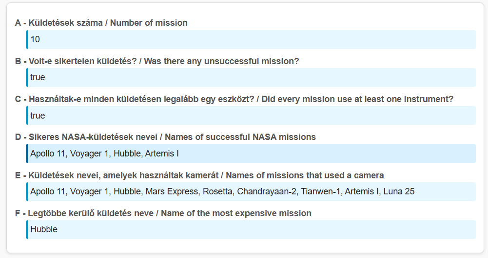
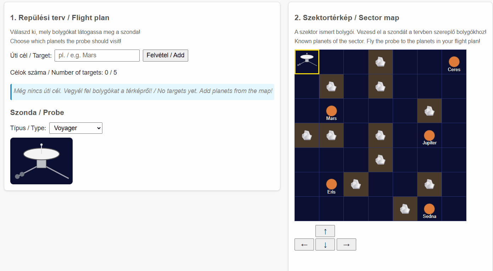
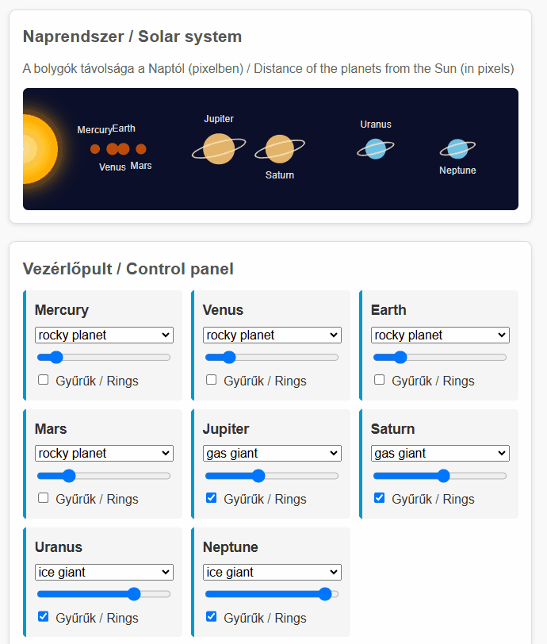

JavaScript évfolyam ZH 1.
Start time: 2026-11-02 17:45:00Deadline: 2026-11-02 19:45:00
Tudnivalók
Mit tegyek a ZH kezdése előtt?
- Készíts ki egy fényképes okmányt az asztalra: Ez lehet személyi igazolvány, vezetői engedély, útlevél vagy ELTE-s diákigazolvány is — a lényeg, hogy ez alapján beazonosítható legyél.
- Pakold a cuccaidat a terem szélére, a telefonod hagyd a táskádban: A ZH során semmilyen saját tárgy nem lehet az asztalon. A kabátokat és táskákat a fal mellé kell helyezni. Telefon, pendrive, stb sem lehet nálad. Ha ilyet találunk, az azonnali bukást jelent a tárgyból. Érdemes a zsebeket is kiüríteni a félreértések elkerülése végett.
- Hidratálj és menj el mosdóba is: A ZH során a termet ideiglenesen elhagyni nem lehet — a teremből való kilépés a ZH automatikus befejezését jelenti.
- Töltsd le a segédanyagaidat: Ha töltöttél fel segédanyagokat a ZH rendszerbe, érdemes most letölteni és elrendezni őket.
Meddig írhatom?
- A ZH munkaideje 2 óra, várható befejezése 19:45, ami az ültetés okozta esetleges csúszás függvényében tolódhat. A pontos időadatot a ZH rendszerben láthatod.
- Az időkeret magába foglalja a feladatok megoldása mellett a kiinduló állományok letöltését, a feladat értelmezését, a megoldás összekészítését és annak feltöltését.
- Ha a rendszer lezárt, utólagos hosszabbításra nincs lehetőség. A feladatot a ZH rendszerben megadott határidőig kell feltölteni, ezért javasoljuk, hogy a ZH utolsó 10 percében már csak a beadással foglalkozz! Az utolsó pillanatra hagyott sikertelen feltöltés ugyanúgy elégtelen érdemjeggyel jár.
- Ha korábban végzel, add be a végleges megoldásodat a rendszerben, majd csendben fáradj a terem ajtajához. Kérjük, várj meg egy felügyelőtanárt a teremből való kilépés előtt. Ne feledd, ha elhagyod a termet, nem jöhetsz vissza!
Mit fogok használni?
- A ZH kezdetekor a ZH rendszerben megjelenik a feladat leírása és letölthetővé válik egy kezdőcsomag. Ezt kell majd letöltened és kicsomagolnod. Két dolgot találsz benne: az elvégzendő feladatok kiinduló kódjait és a vizsgasegéd programot.
- Mindenképpen olvasd végig a Vizsgasegéd program dokumentációját, ugyanis ez téged segít, hogy minden technikai akadály nélkül oldhasd meg a feladatokat, és helyben meggyőződhess a megoldásod minőségéről.
- Az ExamAssistant segítségével a következő feladatok végezhetők el:
- a README fájl kitöltése;
- a starter kód megnyitása VSCode-ban;
- a kód lokális tesztelése (gyorsabb ezt használni, és ugyanazok a tesztek futnak le, mint beadáskor);
- a kód kívánt formátumú becsomagolása (zip), és a tartalmazó mappa megnyitása.
- A kód tesztelése tehát három módon valósulhat meg:
- fejlesztés közbeni manuális tesztelés (szükséges)
- automatikus lokális tesztek (gyors)
- automatikus szerver tesztek (lassú)
- A ZH közben, de legalább egyszer a végén az elkészült kódot fel kell tölteni a ZH rendszerbe. A ZH rendszer eltárolja a fájlt, és továbbküldi a Progenv rendszernek, ami az automatikus teszteléseket végzi. A pontszámot a ZH rendszer is kijelzi (jó esetben a lokális pontszámmal megegyező értékben), és a ZH után a Progenv rendszerben is látható lesz.
- A feltöltött segédanyagaid mellett használható még:
- a Mozilla Developer Network mint nyelvi dokumentáció
- az előadásdiák PDF-ben letölthető változtatai
Mit NE használjak?
Többek közt:
- Emberi segítség (szinkron, aszinkron, chat, fórum, stb.), kivéve a felügyelő tanároktól történő segítségkérést.
- Mesterséges intelligencia (ChatGPT, Bing AI, GitHub Copilot, AI kódkiegészítést/segítséget tartalmazó kiegészítők, stb.).
- Általad összeválogatott VS Code kiegészítőket.
Mit kell még tudnom?
- A feladatok (1, 2, 3) nem épülnek egymásra, tetszőleges sorrendben megoldhatók.
- A részfeladatok (a, b, c...) egy feladaton belül egymásra épülhetnek, de érdemes végigolvasni mindet, akkor is, ha át tervezed ugrani a feladatot, mert lehet független, egyszerűbb részfeladat.
- A feladatokban általában a
.jsfájl módosítása elegendő. Ha a HTML/CSS fájlokat módosítod, valószínűleg túlbonyolítod a megoldást. - A feladatokat programozottan kell megoldani, nem beégetett megoldásokkal!
- Teljes pont csak működő, futásidejű hiba nélküli megoldásra adható.
Lore
A NASA és az Európai Űrügynökség Magyarországra hozta a Kozmosz 2030 projektet. Ennek keretében új rendszereket kell kifejleszteni, hogy a jövőbeli felderítések és missziók zökkenőmentesen működhessenek még a távolság okozta kommunikációs időeltolódás mellett is.
Kezdőcsomag
A kezdőcsomagot IDE kattintva tudod letölteni. Csomagold ki, majd futtasd az ExamAssistant.exe programot!
Feladatok
1. Űrmissziók (task-1, 12 pont)

Készítsd el a fő statisztikákat az eddigi űrmissziókról!
A index.js fájlban hozzáférsz a data.js fájlban definiált spaceMissions változóhoz.
A spaceMissions egy tömb, amely űrküldetéseket leíró objektumokat tartalmaz. Minden küldetéshez az alábbi adatok tartoznak:
- a küldetés neve (
name), - az űrügynökség neve (
agency), - a küldetés éve (
year), - a küldetés célpontja (
destination), - emberes küldetés volt-e (
crewed, boolean), - a küldetés időtartama napokban (
durationDays), - sikeres volt-e a küldetés (
successful, boolean), - a küldetés költsége millió dollárban (
costMillionUSD), - valamint a küldetés során használt eszközök listája (
instruments), tömb formájában.
Oldd meg az alábbi feladatokat:
- a. (1 pont) A
taskAelembe írd ki, hány küldetés volt összesen! - b. (2 pont) A
taskBelembe írd ki, volt-e legalább egy sikertelen küldetés! - c. (2 pont) A
taskCelembe írd ki, hogy használtak-e minden küldetésen legalább egy eszközt! - d. (2 pont) A
taskDelembe írd ki a sikeres NASA-küldetések neveit, vesszővel elválasztva! - e. (2 pont) A
taskEelembe írd ki azoknak a küldetéseknek a nevét, amelyek során kamerát használtak! - f. (3 pont) A
taskFelembe írd ki annak a sikeres küldetésnek a nevét, amelyik a legtöbbe került!
2. Felderítő útvonaltervező (task-2, 14 pont)

A felderítőszondák küldetéseit egy szektortérképen vezénylik az ügynükségek. A szektortérképen a szektor ismert bolygói láthatók, a nevük a cellájukban olvasható. Először össze kell állítanod a szonda repülési tervét: ebbe azoknak a bolygóknak a nevét veszed fel, amelyeket a szondának meg kell látogatnia. Ezután végig kell vezetned a szondát a térképen a tervben szereplő bolygókhoz.
Az index.html és az index.css fájl már tartalmaz minden szükséges elemet és stílusosztályt, a megoldásodat az index.js fájlba írd! Az index.js már tartalmazza a szonda helyzetét tároló probeRow és probeCol változót, a getCell(row, col) segédfüggvényt, amely a táblázat adott sorában és oszlopában lévő cellát adja vissza, valamint az alább felsorolt elemeket tároló konstansokat (pl. targetInput, route, moveUpButton). Ezeket használd, de ne deklaráld újra őket, különben a teljes fájl hibával leáll!
Az oldalon az alábbi elemeket találod:
- egy szöveges beviteli mezőt (
#target-input) és egy gombot (#add-target) az úti célok felvételéhez, - egy számozott listát (
ol#route), amely a repülési tervet tartalmazza, és egy elemet (#route-count) a célok számának kiírásához, - egy legördülő listát (
select#probe-select), amelynek értékei:voyager,pioneer,new-horizons, valamint egy képet (img#probe-image), - egy 7×7-es táblázatot (
table#sector), amely a szektortérképet ábrázolja. Egyes cellákasteroidstílusosztályúak (aszteroidamező), másokplanetstílusosztályúak, és adata-nameattribútumukban a bolygó nevét tárolják, - négy irányító gombot (
#move-up,#move-down,#move-left,#move-right), - egy elemet (
#status) a küldetés állapotának kiírásához.
Oldd meg az alábbi feladatokat:
- Repülési terv:
- a. (1 pont) Az
#add-targetgombra kattintva a#target-inputmező tartalmát vedd fel új listaelemként (li) az#routelistába! A listaelem szövege a beírt név legyen. - b. (1 pont) A beírt szöveg elejéről és végéről távolítsd el a szóközöket (
trim())! Ha így üres szöveg marad, ne kerüljön új elem a listába. Sikeres felvétel után ürítsd ki a beviteli mezőt! - c. (2 pont) Kezeld a szonda kapacitását!
- (1 pont) A
#route-countelemben mindig a listában lévő úti célok száma legyen olvasható! - (1 pont) Ha a lista elérte az 5 elemet, az
#add-targetgomb legyen letiltva (disabled)!
- (1 pont) A
- d. (1 pont) A
#probe-selectlegördülő lista változásakor (change) a#probe-imageképsrcattribútumát állítsdimg/<érték>.svg-re, ahol<érték>a kiválasztott opció értéke (pl.img/voyager.svg)!
- a. (1 pont) Az
- Szektortérkép: a cellákon csak a
probestílusosztályt tedd fel, illetve vedd le; a többi stílusosztályuk (asteroid,planet) és adata-nameattribútumuk maradjon meg (classList-et használj, neclassName-et)! Az e–g. részfeladatok ezt is ellenőrzik.- e. (1 pont) Az oldal betöltésekor a szonda a táblázat bal felső cellájában (0. sor, 0. oszlop) legyen: a cella kapja meg a
probestílusosztályt! Mindig pontosan egy cellán legyenprobestílusosztály. - f. (2 pont) Az irányító gombokra kattintva a szonda lépjen egy cellát a megfelelő irányba: a régi cellájáról kerüljön le, az újra kerüljön fel a
probestílusosztály! Ne felejtsd el frissíteni aprobeRowésprobeColváltozót!- (1 pont) A
#move-rightgomb működik. - (1 pont) Mind a négy gomb működik.
- (1 pont) A
- g. (2 pont) Ha a lépés nem lehetséges, a szonda maradjon a helyén!
- (1 pont) A szonda ne hagyhassa el a térképet!
- (1 pont) A szonda ne léphessen
asteroidstílusosztályú cellára!
- h. (4 pont) Fejezd be a küldetést!
- (2 pont) Ha a szonda olyan
planetcellára lép, amelynekdata-nameértéke pontosan (kis- és nagybetűre is) megegyezik a repülési terv (#route) valamelyik elemének szövegével, akkor az a listaelem kapja meg avisitedstílusosztályt! Csak a lépés pillanatában már felvett célokat kell megjelölni. (Példa: ha a tervben szerepel aMars, és a szonda adata-name="Mars"cellára lép, aMarslistaelemvisitedlesz. Amarsvagy a térképen nem szereplőPlutolistaelem soha nem leszvisited.) - (2 pont) Amikor a repülési terv minden eleme
visitedlett, írd ki a#statuselembe:Küldetés teljesítve!(angolulMission complete!is elfogadott). Addig a#statuselem maradjon üres!
- (2 pont) Ha a szonda olyan
- e. (1 pont) Az oldal betöltésekor a szonda a táblázat bal felső cellájában (0. sor, 0. oszlop) legyen: a cella kapja meg a
3. Naprendszer-vezérlő (task-3, 14 pont)

Készíts vezérlőpultot a Naprendszer modelljéhez! A bolygók távolságát, színét és gyűrűit lehessen változtatni. A vezérlők eseményeit delegálással kezeld!
A megoldásodat az index.js fájlba írd! A planets tömböt alapértelmezés szerint a data.js fájlból töltjük be. A feladathoz a bolygók name, type, distanceFromSun (millió km), diameter (km) és hasRings adataira lesz szükséged.
A bolygókat a #planets elembe generáld, a már ott lévő Nap mellé, a vezérlőket pedig az üres #input-fields elembe! Mindkét helyen találsz egy HTML-mintát megjegyzésként. A szükséges stílusok az index.css fájlban vannak; használd a feladatban megadott azonosítókat, stílusosztályokat, attribútumokat és eseményeket!
A kezdőcsomagban három segédfüggvényt adtunk:
delegate(parent, type, selector, handler): az előadáson bemutatott segédfüggvény. Aparentelemen kezeli atypetípusú eseményt, és ha az aselectorszelektorra illeszkedő elemen (vagy azon belül) történt, meghívja ahandlerfüggvényt: ebben athisaz illeszkedő elem, a paramétere pedig az eseményobjektum (ezértfunction-t adj át, ne nyílfüggvényt). Használata nem kötelező.distanceToPx(distance): a Naptól mért távolságot millió kilométerről pixelre váltja.diameterToPx(diameter): az átmérőt kilométerről pixelre váltja.
Az index.js a #input-fields és a #planets elemet tároló inputFields és planetsDiv konstanst is tartalmazza; ezeket ne deklaráld újra!
A data-index attribútumokban mindig a bolygó planets tömbbeli indexét használd (0, 1, 2, …)! A különböző típusok listáját programozottan állítsd elő a tömbből, az első előfordulásuk sorrendjében. A típusindex a típus helye ebben a listában: 0 – rocky planet / kőzetbolygó, 1 – gas giant / gázóriás, 2 – ice giant / jégóriás. A megjelenített típusneveket a betöltött adatokból vedd!
- Generálás
- a. (1 pont) Minden bolygóhoz generálj egy
divelemetplanet-controlstílusosztállyal a#input-fieldselembe, aplanetstömb sorrendjében! Mindegyikben legyen egyh3elem a bolygó nevével. - b. (2 pont) Minden
.planet-controlelembe generálj egyplanet-colorstílusosztályú legördülő listát (select)! Adata-indexattribútuma a bolygó indexe legyen.- (1 pont) Az
optionelemek a különböző bolygótípusokat tartalmazzák a típusindex sorrendjében. Avalueértékük a típusindex, a szövegük a típus neve legyen! - (1 pont) Kezdetben a bolygó saját típusa legyen kiválasztva!
- (1 pont) Az
- c. (1 pont) Minden
.planet-controlelembe generálj egy csúszkát (input,type="range")planet-orbitstílusosztállyal és a bolygó indexével adata-indexattribútumában! Aminértéke0, amaxértéke500, a kezdőértéke pedigdistanceToPx(distanceFromSun)legyen. - d. (1 pont) Minden
.planet-controlelembe generálj egy jelölőnégyzetet (input,type="checkbox")planet-ringsstílusosztállyal és a bolygó indexével adata-indexattribútumában! Akkor legyen bejelölve (checked), ha a bolygónak van gyűrűje (hasRings). A mintában szereplőlabelelem használata nem kötelező. - e. (2 pont) Minden bolygóhoz generálj egy
spanelemetplanetstílusosztállyal a#planetselembe! Adata-indexattribútumába a bolygó indexét, atitleattribútumába a bolygó nevét írd.- (1 pont) A
spankapja meg atype-<típusindex>stílusosztályt (pl. a Marstype-0, a Jupitertype-1), és ha a bolygónak van gyűrűje, aringsstílusosztályt is! - (1 pont) A
spanleftstílustulajdonságadistanceToPx(distanceFromSun), a szélessége (width) és a magassága (height) pedigdiameterToPx(diameter)pixel legyen (pl. a Mars eseténleft: 106px,width: 12px,height: 12px)!
- (1 pont) A
- a. (1 pont) Minden bolygóhoz generálj egy
- Eseménykezelés
- f. (2 pont) Egy
.planet-orbitcsúszka mozgatásakor (inputesemény) állítsd az azonosdata-indexértékű bolygóleftstílustulajdonságát a csúszka értékére, pixelben! - g. (1 pont) Egy
.planet-colorlista változásakor (changeesemény) az azonosdata-indexértékű bolygó kapja meg a kiválasztott típushoz tartozótype-<típusindex>stílusosztályt! Az előző típus stílusosztályát távolítsd el; egyszerre csak egytype-*stílusosztály legyen rajta! - h. (1 pont) Egy
.planet-ringsjelölőnégyzet változásakor (changeesemény) az azonosdata-indexértékű bolygón akkor legyenringsstílusosztály, ha a jelölőnégyzet be van jelölve! Ellenkező esetben távolítsd el róla! - i. (3 pont) Az f–h. részfeladatokat delegálással oldd meg: az eseménykezelőket ne az egyes vezérlőkre, hanem egy közös ősükre (pl. a
#input-fieldselemre) regisztráld! Használhatod a megadottdelegatefüggvényt, vagy azevent.target-et is. Vezérlőtípusonként 1 pont jár: csúszka, legördülő lista, jelölőnégyzet.
- f. (2 pont) Egy